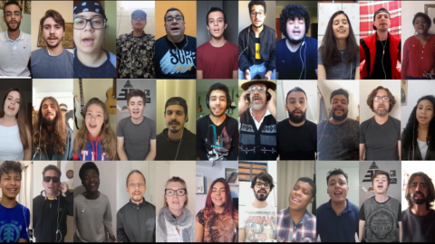

A Paz - Cover em colaboração com 33 músicos regionais
Descrição do Projeto
gravado com mais de 33 artistas.
Realizado durante a pandemia pra movimentar a cena cultural e trazer um respiro à comunidade.
O título da obra vem da junção de temas e estéticas abordadas: Apolo - Deus do sol e deus da poesia na mitologia grega, e também nome de uma das
Para ouvir, acesse: Canal da BMDQ
← Voltar ao portfolio